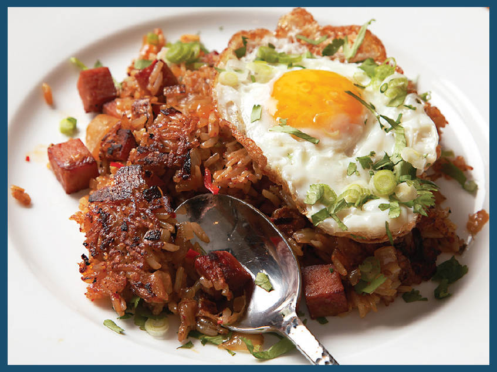

KIMCHI AND SPAM FRIED RICE
The setting: The rice was left over from dinner a few days back. The kimchi had been resting in the back of the second shelf of my fridge for many months. (Actually, I’m pretty sure it had been sitting there for nearly a year, meaning it was extra sour and funky.) The Spam . . . I’m honestly not sure where the Spam came from. I can’t remember buying Spam since that one time eight years ago, when I tasted every flavor of Spam on the market for an article on Serious Eats and took a brief lie-down to deal with the salt rush, immediately followed by a second lie-down to deal with the withdrawal symptoms.

Perhaps Spam spontaneously generates in dimly lit pantry closets, the way mice spontaneously appear when a piece of soiled linen is stored with the wheat.
Whatever the provenance, I knew its destination: Add to it an egg, an onion, and a few other aromatics, and I had everything on hand to make myself a big ol’ plate of the ultimate Korean American late-night drunk food: kimchi and Spam fried rice. This is the kind of stuff you eat while swaying gently over the kitchen counter in your underwear.
To start, I drain away as much of the kimchi juice as possible into a bowl, pressing on the cabbage to really force it out. The reason is that we want to sauté the kimchi and give it a little flavor, and any excess moisture will inhibit that. Don’t worry; we’ll use it all again later on.
Next, I start stir-frying, beginning with diced Spam. Even though Spam is packed with fat, you need a little oil in the pan to get it started. I cook the Spam until it’s crisp, then add chopped onions and the chopped kimchi, stir-frying it all together until the onions are softened and the kimchi is just starting to brown a bit around the edges. I then transfer everything to a bowl to empty out the wok.
After frying my rice in the now-empty wok, I add my aromatics: scallions, garlic, and thinly sliced hot chiles to double down on the heat from the kimchi. As soon as they’re fragrant, I return the kimchi/Spam mixture to the wok and toss it all together.
Now we get to seasoning. The kimchi juice is the first step, and with high enough heat, it should sizzle and dry up pretty rapidly. I also use a big splash of fish sauce, a touch of toasted sesame oil, and a ton of ground black pepper. Sesame oil and ground black pepper go together like Bert and Ernie, if Bert and Ernie tasted way, way better than they do.
Here’s the real trick for this particular dish: letting that rice sit in the wok without moving it. The idea is to create a crisp, charred fried-rice shell, like what you’d find in the bottom of a good paella or a dolsot bibimbap.
It’s the textural element and toasty flavor that push this over the edge, from “this is pretty good” to “please don’t talk to me while I’m eating this”–level stuff. Top it all off with a crisply fried egg and some hot sauce, and . . . I’m not even sure what territory we’re in, but it’s a good place to be.
Whether it’s first thing in the morning or late at night, any time that you’re typically in your underwear is the right time for kimchi and Spam fried rice. It’s time to rock out with your wok out, or maybe chow down with your pants down. Or both. Or neither. I’m too tipsy and hungry to care, really.